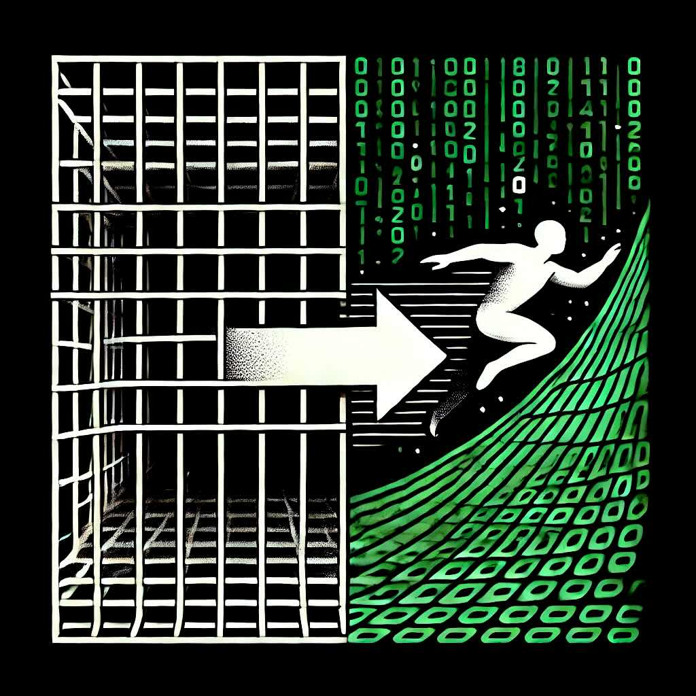

The Unblocked Carver
Issue #3: Reclaiming Your Creative Agency
Has the world ever been so restless?
Have you ever felt less certain about what the future holds?
The careers of tomorrow are no longer something educational institutions can predict. Most of what you could pay them to teach you will soon become irrelevant.
The path to creating the life you want is obscured if you look to your parents, schools, or employers for the answer. We are living through an era of unprecedented unpredictability.
Artificial intelligence is largely seen as a black swan of incalculable consequence. Reasonably so.
Politics? Don't even start.
This letter isn't about quantifying how far society has gone off the rails. It's clear—it's ugly. You know it; I know it.
People today are more disempowered and cynical than ever.
"The meaning crisis" has become a widely recognized term in intellectual and cultural discourse.
Let us not accept that as our fate.
You know there's immense potential within you that is falling by the wayside.
It overwhelms you—the epic scale of what you could do. And so you turn to the comfort of cheap dopamine hits, settling for "good enough," right?
You work hard at a job that feels meaningless, and in the exhaustion of your day, you justify your vices, distractions, and forgettable entertainment.
But what if there were another way? What if you could reclaim your creative agency, find meaning, and genuinely transform your life?
You Were Trained To Be A Slave.
Now. If you aren't living the life you want, you have some painful realizations between you and that life.
Most people spend massive amounts of energy trying to live up to what they believe is expected of them.
They believe that expressing themselves freely is dangerous, and that nobody will love them if they dare to take life by the gonads and live creatively.
You know what that means? It means that they don't have agency.
You were likely taught from childhood that you must be obedient to authority figures, and you must be able to come up with correct answers to avoid punishment or be rewarded.
In school we were expected to remember "correct" information and procedures. We were not taught that we could create new solutions to problems, or playfully enjoy the process of contributing our uniqueness to the world.
If creativity was ever encouraged, it was for art class, and divorced from other subjects. Math class was a drag for most people. Some of us experienced the exceptions in something like wood shop class, or with exceptional teachers, but generally creativity was divorced from the so-called practical knowledge.
We were conditioned to think of work as an essential burden in life. Work is apparently something that everybody dislikes but just has to accept. After grade school you should go to post-secondary and specialize in a field. After that you should get a job, follow all the rules, and satisfy your boss. Get married, keep your wife happy, and make sure your lawn looks good.
We're constantly bombarded with messaging in childhood and adulthood that trains us to believe and feel that somebody else is in control of our lives, or that the life you've been told to live is "just the way things are."
Even if you have the courage to venture outside of society's norms, you're likely still programmed enough to give up on projects that face social resistance and take too long to prove their worth.
This might offend you, but if you can't accept it then nothing I say will help you:
You were trained to be a slave.
You were trained to be attached to your slavery, and think of it as the safest option.
Human beings were not meant to be enamoured by security. We're meant to be risk takers who triumph over challenges and overcome failures. We're meant to be exposed to pathogens, get injured, and face the informative consequences of being wrong.
The purpose of consciousness is to wrestle with novelty and danger, not abide by a narrow set of habits and the supposed safety of the status-quo.
Playing it Safe is Not Safe At All
Being rewarded for accurately holding information in our short to medium-term memory did not train us to be deep learners.
I've spent the last eight months reading a book called Gödel, Escher, Bach: An Eternal Golden Braid [A Metaphorical Fugue on Minds and Machines in the Spirit of Lewis Carrol]. It's the most difficult book I've ever read, full of mathematical paradoxes and dialogues between Achilles and the Tortoise that are structured like Bach's fugues. I tried to find others who wanted to read it so that I'd have people to discuss it with, but considering it sat on my shelf for several years before I found the courage to jump in, my little book club dream was unsurprisingly futile.
Something from that book stands out as relevant here:
Adrian de Groot, Dutch psychologist, first hypothesized that the chess masters he kept losing to must have a photographic memory. This was shown to be false: chess masters rarely look many more moves ahead than novices.
Instead, chess masters intuit higher-level patterns and are simply not seeing whole chunks of bad moves, just as even a novice automatically ignores illegal moves.
Memorization of all possibilities and using "brute-force" computation to analyze them all is not a good strategy. It's practically an infinitely complicated game, with around 288 billion possible outcomes of the first four turns. This is why it took so long for computers to surpass human chess masters.
Failures and mistakes provide valuable feedback for the brain. Over time, the mind "prunes" ineffective strategies in chunked patterns, similar to a chess master's instincts.
Seeing mistakes as steps toward mastery, we learn to trust our brain's ability to synthesize experiences. Eventually, conscious effort gives way to implicit knowledge.
This demonstrates our incredible and unique capacity for "non-monotonic cognitive change." Our cognitive systems allow much more functional complexity than simply the addition of more information:
Non-monotonic cognitive change let's you undergo paradigm revolutions in representation. Old knowledge can and must be overridden and transformed by new information (see "Deep Learning" by Stellan Ohlsson).
We generally trust our bodies to do what they must via their own intelligence (as long as we move and feed them appropriately).
We trust that if we water a plant in good conditions, all of its mesmerizing complexity will emerge in good health; its abilities to interact with the world will be effective for survival.
Somehow, though, we find it hard to trust our ability to manage the larger patterns of our lives. We seek to be immediately correct instead of jumping into the necessary process of making lots of errors, and taking action based on curiosity.
The key to real deep learning is courage: trusting the inner mechanisms that are responsible for learning when we practice, experiment, and explore effectively. These inner mechanisms are built on billions and billions of informative mistakes that your ancestors made, resulting in the biological miracle that is your body and mind.
Through strategic and courageous repetition and iteration, you can find a level of personal genius in any pursuit.
This is why more C students become successful entrepreneurs than straight-A students.
In school, you experienced being punished, in some sense, for being wrong. You need to learn to reward yourself for experimenting, even when you're wrong. Unlearn the faulty process that they taught you.
The most important insight here is that if you unlearn the hyper-aversion to failure that you were taught, you can begin to undergo the revolutions in consciousness that actually lead to genius.
"I have not failed. I've just found 10,000 ways that won't work" — Thomas Edison
Generative Drive is Foundational
"A human being should be able to change a diaper, plan an invasion, butcher a hog, conn a ship, design a building, write a sonnet, balance accounts, build a wall, set a bone, comfort the dying, take orders, give orders, cooperate, act alone, solve equations, analyze a new problem, pitch manure, program a computer, cook a tasty meal, fight efficiently, die gallantly. Specialization is for insects."
-Robert A. Heinlein
Our wellbeing is greatly diminished by a lack of agency. This was outlined in incredible detail in a series of three-hour podcasts that Andrew Huberman did with Paul Conti, a psychiatrist and expert on trauma.
Dr. Conti explains that the cornerstone of mental health is called the generative drive, which contrasts with the pleasure and aggressive drives.
The generative drive is a natural force within us that brings us to strive for personal growth and betterment of the world around us. It thrives on curiosity, and is ultimately a creative force. It is cultivated by exercising these two pillars:
- Agency
- Gratitude
Agency and gratitude are active processes. Self-inquiry is required to investigate our unconscious beliefs about what we have control over and can take action on. Gratitude results from a conscious decision to pay attention to the many valuable things within us and in our circumstances.
"It's a spirited inquiry to follow the clues, because if we follow the clues, there are answers."
— Paul Conti
Because agency has been, in many ways, trained out of most of us, it takes time to build it. The more we overcome challenges that require this active force, the more we create an inner conviction that our problems have solutions.
Heroism and Cowardice
"Gradually it was disclosed to me that the line separating good and evil passes not through states, nor between classes, nor between political parties either—but right through every human heart"
— Aleksandr Solzhenitsyn
Inside of you is both the hero and the adversary.
We are socially conditioned creatures because we survive in groups, but there's a catch. Marionettes can only pull each other's strings for so long. A culture of pure conformism can't survive. A healthy society depends on the capacity for individuals to grow past their initial conditioning and challenge the values, perceptions, and standards of the group.
The group doesn't always respond kindly, which is why such action is heroic. Generative drive is discouraged by a culture of conformism.
To snuff out one's own creativity for the sake of social acceptance is cowardly. The way of the cow herd.
As goes the quote often attributed to Jiddu Krishnamurti:
"It's no measure of health to be well adjusted to a profoundly sick society."
Yes, social conditioning can actually make us ill.
Emancipation
"Though the problems of the world are increasingly complex, the solutions remain embarrassingly simple."
— Bill Mollison
Bill Mollison was one of the developers of permaculture, a system of regenerative agriculture design based on whole-systems thinking.
Consider your life as your garden, and recognize that you are the designer.
The internet is flooded with anxious political argumentation and various other media messaging that disempowers you, and tells you that positive change, public health, and solutions to social ills all come down from the top.
It's a lie perpetuated by its believers, because it absolves them of responsibility.
Create Your Freedom Through Meta-Cognition
“When a system is far from equilibrium, small islands of coherence in a sea of chaos have the capacity to elevate the entire system to a higher order.” — Ilya Prigogine
The type of spirited inquiry that Dr. Paul Conti talks about is enhanced by what's called meta-cognition: awareness of the nature and context of one's own mental processes that, being mostly habitual, don't intrinsically require much awareness.
Meta-cognition allows you to cultivate agency and gratitude, resulting in the generative drive that is required to enthusiastically work toward your dream life.
If you get one take-away from this letter, let it be this. One of the greatest tools for developing meta-cognition is writing.
A regular writing practice teaches you how to think clearly. This is the ultimate way to engage in the curious self-inquiry that Dr. Paul Conti suggests is necessary for mental wellbeing, and cultivation of agency.
Writing also develops your communication skills which can improve your social life, and allow you to market yourself effectively no matter what you're doing.
From Slavery to Agency
Generative drive comes from self-understanding. You have many different forces driving you, many of which are in conflict like a vehicle with wheels that rotate in different directions. Meta-cognition allows for the clarity to sort out all those drives into organized hierarchies of sub-goals, which results in much less resistance.
That state of non-resistance to taking action is the generative drive, the naturally creative, intelligent force within you.
Lately I've greatly appreciated how Dan Koe, the author of The Art of Focus, has articulated similar insights in his article on The Future-Proof Skill Stack:
"…you need to learn how to set self-generated goals, utilize the internet, mentors, and the abundance of information you have access to to educate yourself.
Then, you need to embrace trial and error, self-reflect, and experiment to create your own path.
Creativity gives you the power to do whatever you want in life.
Those who don’t realize this gift are doomed to the assignments of others."
— Dan Koe
I believe I've conclusively made the point that I wanted to in this letter.
I hope it meant something significant to you, and that you choose to take massive action that frees you to be the master of your life.
This is a skillset that can save you thousands over the years, free you to build the internet on your terms, and give you the ability to build your own business on the internet.
If you've come this far, then you've earned this secret code: TaoistThreads
(Include it in the "experience level" field when you apply for the course to have your registration fee discounted by $50.00 CAD.) Click on this image to find out more about Web Design for Anarchists! 